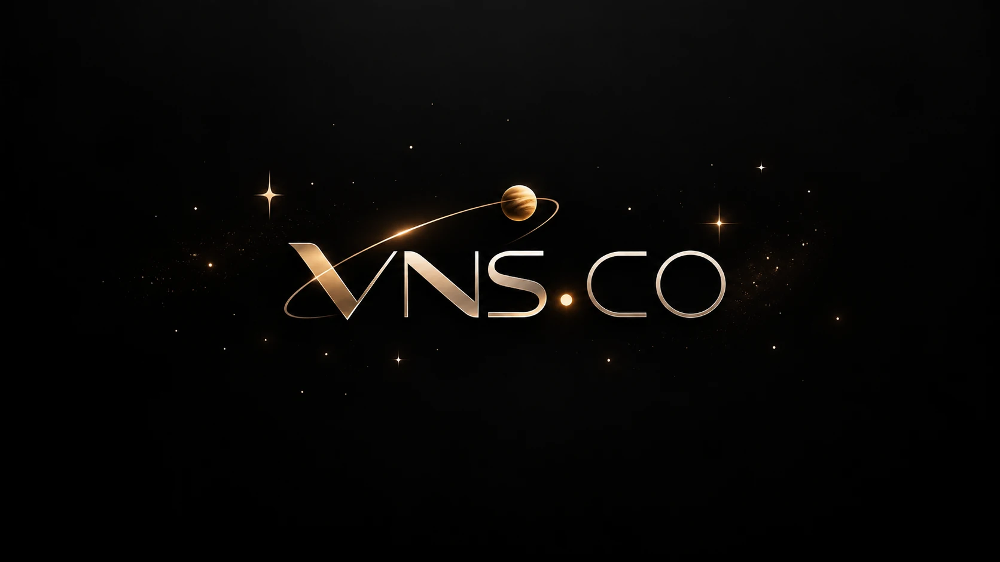

01 / SECURITY
Hacking ético & segurança
Fundamentos de cibersegurança, privacidade, identificação de riscos e testes autorizados em ambientes controlados.
ProteçãoBoas práticas
Ver conteúdos Hacking ético, segurança digital, redes, manutenção de computadores e eletricidade básica. Tudo em um só universo para aprender, explorar e construir.

01 / NOSSAS ÁREAS
Conheça os assuntos que movem a VNS.CO: proteção, conectividade, equipamentos e os fundamentos da energia.
Fundamentos de cibersegurança, privacidade, identificação de riscos e testes autorizados em ambientes controlados.
Endereçamento IP, roteadores, Wi‑Fi, cabeamento estruturado e conceitos para redes mais organizadas e seguras.
Peças de computadores, diagnóstico inicial, limpeza, organização e cuidados preventivos com PCs e notebooks.
Tensão, corrente, resistência, Lei de Ohm, componentes e segurança ao estudar circuitos de baixa tensão.
02 / BASE DE CONHECIMENTO
Guias introdutórios de verdade para começar pelos conceitos certos. Clique em um tema para ler.
Nenhum guia encontrado. Tente outro termo ou categoria.
✦ Conteúdo educacional introdutório. Hacking ético exige autorização; eletricidade exige cuidados e supervisão adequada.
03 / LABORATÓRIO INTERATIVO
Entenda como tensão, resistência, corrente e potência se relacionam. Use a calculadora didática com valores de um circuito simples de baixa tensão.
⚠ Simulação educativa. Não utilize como orientação para trabalhar em tomadas, redes elétricas ou instalações energizadas.
INSIRA OS VALORES
Valores teóricos para um resistor ideal.
04 / QUEM SOMOS
A VNS.CO é apresentada aqui como um espaço dedicado ao universo da tecnologia. Da defesa digital aos fundamentos da eletricidade, a proposta é reunir informação clara, ideias práticas e aprendizado responsável.
O objetivo é facilitar o primeiro contato com temas técnicos e incentivar o desenvolvimento de novas habilidades.
05 / DÚVIDAS FREQUENTES
Duas respostas importantes para quem está entrando nessa área.
É avaliar a segurança de sistemas e redes com autorização explícita e limites definidos. O objetivo é encontrar e corrigir riscos, não invadir ou causar danos.
Você pode estudar a teoria e montar circuitos didáticos de baixa tensão com componentes apropriados e supervisão. Não abra equipamentos ligados à tomada nem intervenha em instalações energizadas.
Sim. Os conteúdos do site são introdutórios e explicam conceitos essenciais com linguagem acessível, sem exigir experiência prévia.
06 / FALE COM A VNS.CO
Conte qual área desperta seu interesse. Prepare uma mensagem organizada para enviar pelo canal que preferir.